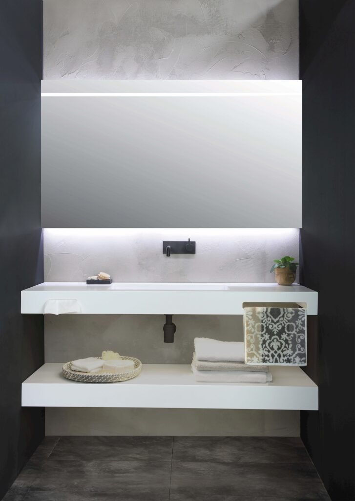
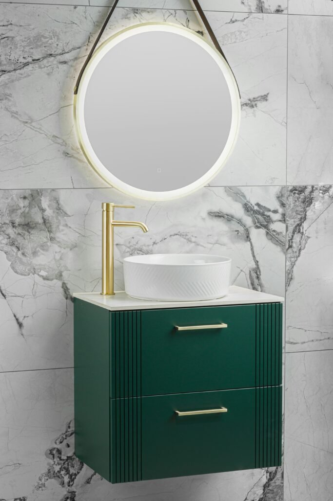
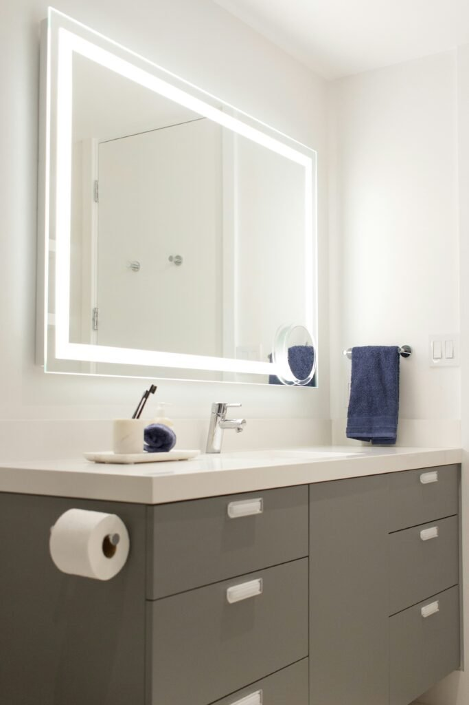
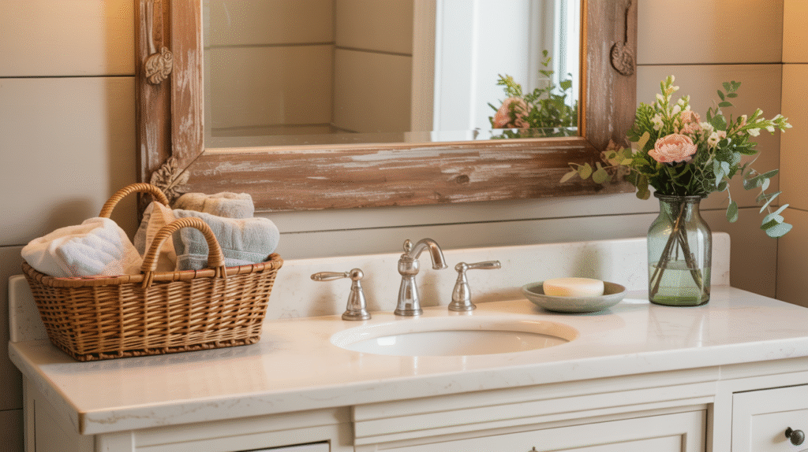
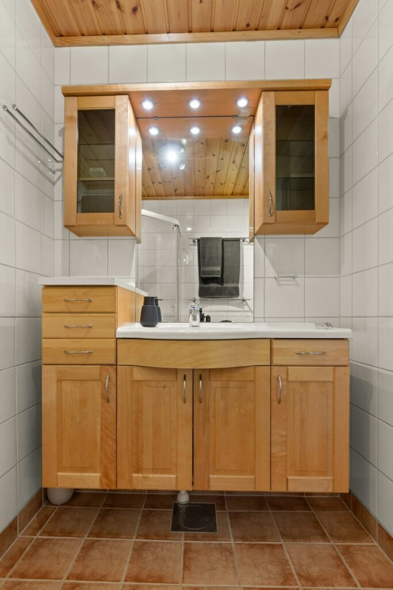
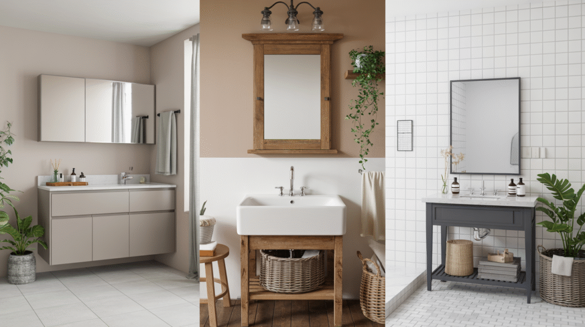
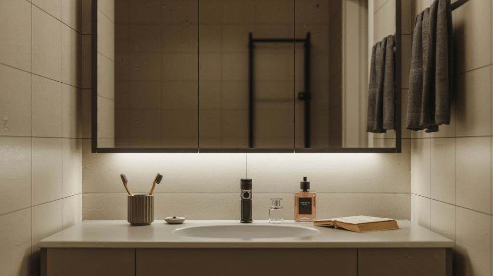
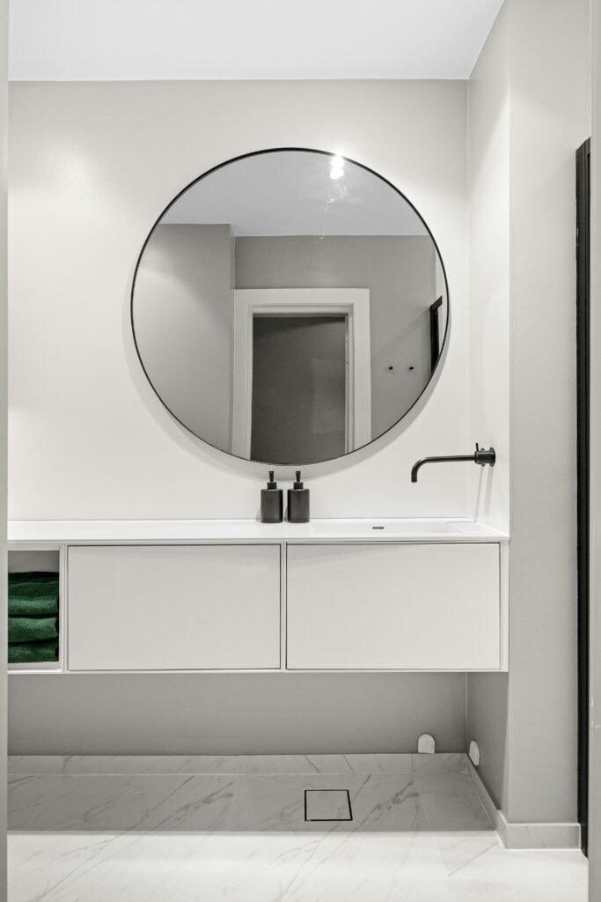

A mirror cabinet does double duty. Storage and reflection, both at once.
And that's exactly why it tends to get styled less carefully than either job actually deserves.
Most bathrooms treat it as purely functional, hung up and then forgotten about.
It's worth a lot more consideration than that.
Here's how to actually style one, by design direction and by the details most people skip entirely.

The Mistakes Worth Avoiding First
Choosing a cabinet based purely on storage capacity, without considering how the frame and mirror proportions actually work in the room, is the most frequent misstep.
Overfilling the interior shelves until the door won't close properly is a close second. A cabinet that's hard to use stops getting used properly at all.
Get the Organization Right
Group items by category, skincare, daily medications, grooming tools, on dedicated shelves, and the cabinet stays functional even when you're opening it quickly every single morning.
A small bin or tray for loose items keeps the bottom shelf from turning into an unsorted catch-all.
Pair It With the Vanity Below
A cabinet that shares a material or finish with the vanity underneath creates a cohesive, intentional look, rather than two separate fixtures that just happen to share a wall.
This pairing actually matters more to the room's overall polish than either piece chosen on its own would.
Accessorize Around It, Not Just Inside It
A small shelf, a plant, or a piece of art placed near the cabinet extends its presence into the rest of the wall, instead of leaving it visually isolated on its own.
It's a simple way to make a purely functional fixture feel like it's actually part of the room's intentional design.

Let Lighting Do the Real Work
A cabinet with integrated lighting, or one paired with sconces on either side, does more for daily function than the cabinet itself ever could.
Warm-toned lighting specifically flatters skin tone far better than the cool, clinical light a lot of bathroom fixtures default to.
Styling for Eclectic and Bold
An unusually shaped cabinet, a bold frame color, or an unexpected hardware finish, all of it works in a room that's already embracing a more maximalist approach.
This is the one style direction where the cabinet itself can genuinely be the room's statement piece, rather than just a supporting element.

Styling for Minimalist
A frameless or barely-there frame keeps the cabinet from adding visual weight to an intentionally pared-back room.
Interior organization matters most in this style, since a minimalist room offers nowhere for clutter to hide once that door swings open.

Styling for Farmhouse Chic
A wood-framed cabinet, or one with slightly distressed hardware, brings warmth that fits a farmhouse bathroom's broader material story.
A few considered objects visible through an open door, folded towels, a simple glass jar, extend that farmhouse feeling even into the cabinet's interior.


Styling for Modern Luxe
A sleek, minimal frame in brushed brass or matte black, paired with clean-lined hardware, fits a modern luxe bathroom without competing against the room's other finishes.
Keeping the interior shelves sparse and organized matters more in this style than almost any other, since the whole look depends entirely on restraint.
Choosing the Right Size for the Space
A larger mirror cabinet can actually make a small bathroom feel more spacious by reflecting more light back into the room, while an oversized one in an already tight space risks feeling heavy instead.
Matching the cabinet's width roughly to the vanity below it creates a more intentional, built-in feeling than a mismatched size ever manages.

Its Role Across Different Design Styles
A mirror cabinet's frame, hardware, and proportions should echo the bathroom's broader style, rather than being chosen in isolation from everything else.
This one piece of furniture-adjacent hardware carries more stylistic weight than its size would suggest, simply because of how central it is to the room.

Why It Deserves More Attention Than It Gets
A mirror cabinet sits at eye level and gets used daily, which makes it one of the most-seen fixtures in the entire bathroom, styled or not.
Treating it as a genuine design element, not just a medicine cabinet with a mirror stuck on front, changes how the whole room reads.


Worth the Extra Thought
A mirror cabinet earns real design attention beyond its storage function. The frame, the lighting, and what's visible inside all matter.
Match it to your room's broader style, keep the interior genuinely organized, and it becomes a considered fixture rather than an overlooked necessity.
It's worth the investment, both in function and in how it shapes the whole room's first impression.